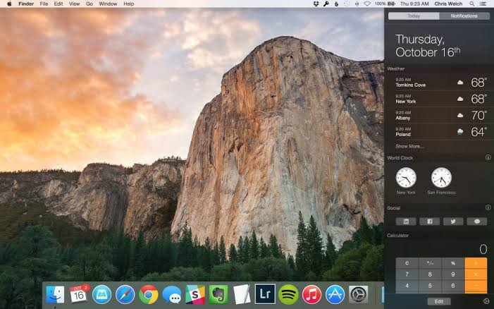

Mac For Desktop
19 Years of Mac Operating system
A long journey for apple through 19 years. From the release of Mac1 to today, Mac OS has transformed visually, conceptually and functionally. Apple's Desktop operating system may have started out scrappy, but it has dramatically evolved.Here's a fast-paced tour of Mac version highlights from the platform's birth to present.
CHEETAH
The history of macOS started with a bear, not a cat: in September of 2000, Apple presented Kodiak. For 30$, users could purchase this first public Beta of Mac OS X. The official OS 10.0, Cheetah, followed 6 months later in march 2001. It featured Apple's brand new user interface Aqua and the first versions of apps like TextEdit, Preview, Mail, and QuickTime. The new OS X demanded an (at that time: whopping!) 128 MB of RAM and 800 MB of disk space.
PUMA
Just half a year later in september 2001, Puma was released. Instead of delivering many new features, it focused on improving the system's performance. With Mac OS 10.1.2, Apple also started shipping OS X by default with new computers - and replaced OS 9 for good.
JAGUAR
In August 2002 Jaguar was released, Jaguar featured new applications like iChat and Address Book. It also introduced Universal Access, a component that made OS X more usable for people with visual and hearing impairment or physical disability. Besides that, OS 10.2 showed a new startup screen: it replaced the Happy Mac logo with the new, fruity Apple icon.
PANTHER
In October 2003 PANTHER was released, Microsoft must have had mixed feelings with Panther: on the one hand, Internet Explorer for Mac was superseded by the new Safari as the default web browser. On the other hand, 10.3 brought many interoperability improvements with Microsoft Windows (including out-of-the-box support for Active Directory). Additionally, Apple presented Exposé to improve working with multiple open applications.
TIGER
In April 2005 Tiger was released, Tiger brought the invaluable Spotlight search to Mac OS. It was also the first version to present Widgets (like a calculator, a calendar, or a clock) on the new Dashboard. Besides that, Mac OS 10.4 inaugurated new hardware: it was installed both on the first Macs with Intel processors and on the first Apple TV devices (that were yet to come out later, in 2007).
LEOPARD

In October 2007 Leopard was released, No other Mac OS had been such a long time in the coming. However, Apple had been busy developing and releasing iOS and the iPhone in the meantime... The new Leopard, anyhow, introduced a built-in backup system called Time Machine. It also brought full support for 64-bit applications. Moreover, Mac computers could now run other operating systems like Microsoft Windows - thanks to Boot Camp.
SNOW LEOPARD

In August 2009 Snow Leopard was released, Like the name suggests, Snow Leopard built mainly on top of its predecessor, Leopard. However, it introduced the new Mac App Store that was inspired by its successful companion on iOS. Mac OS 10.6 also marked the end of the PowerPC architecture. Only Intel-based Macs were supported from this point on.
LION
In July 2011 Lion was released, The king of all cats, Lion, was the first version of Mac OS that wasn't available on CDs or DVDs anymore. The exclusively downloadable OS picked up many ideas from iOS: Gestures, Launchpad, window restoring, ... Apple's newest part of infrastructure, iCloud, also debuted in Mac OS 10.7.
MOUNTAIN LION

In July 2012 Mountain Lion was released, Mountain Lion brought even more successful concepts from iOS to the Mac: a new Messages app to replace iChat, the Reminders app, and the Notification Center. Even before presenting OS 10.8, Apple made a big announcement: it committed to a yearly release cycle for new versions of Mac OS.
MAVERICKS
In October 2013 Maverkicks was released, With Mavericks, Apple didn't only introduce a new naming scheme for its operating system. It also made OS 10.9 a free upgrade and promised to keep future updates free, too. New applications like Maps and iBooks were also presented with Mavericks.
YOSEMITE
In October 2014 Yosemite was released, The biggest design change in years, Mac OS 10.10 follows its little brother iOS - with a flatter appearance and blurred transparency effects. With the new Handoff functionality, users are able to move seamlessly between devices, even during individual tasks. Apple also emphasizes its Full Screen Mode feature: it's now triggered through the traditional green button in the window title bar.
EL CAPITAN

In September 2015 EL Captain was released, El Capitan, named after a rock formation in Yosemite National Park, concentrates on performance & stability improvements. Besides some smaller enhancements to Safari, Spotlight, Mail, and Notes, the introduction of Split Views is probably the biggest novelty: a way to conveniently arrange two applications' windows side-by-side.
SIERRA
Goodbye OS X, hello macOS. in September 2016 Sierra was released, once more, Apple's desktop operating system moves closer to its iOS sibling. And it's not only the name: Siri, also originally introduced on the iPhone, is now on macOS, too. Also in Sierra, Safari officially introduces Apple Pay and Apple Watch can now unlock your Mac.
HIGH SIERRA

In September 2017 High Sierra was released, Much like El Capitan two years before, High Sierra concentrates mostly on "under the hood" improvements. The Apple File System, for example, brings faster file operations and better security. With HEVC, Apple now supports a new video standard - with up to 40% better compression than previously. As far as applications are concerned, especially Safari and Photos get a new coat of whitewash (and some new features).
MOJAVE
In September 2018 Mojave was released, Mojave is a very visual update. Partly due to Dynamic Desktop (which delivers time-shifting desktop pictures), but especially due to the new Dark Mode (which offers a dark appearance for all built-in and many third-party apps). Apart from improvements to Finder and FaceTime, Apple brings over four new Mac apps from iOS: News, Stocks, Home, and Voice Memos.
CATALINA
In October 2019 Catalina was released, Catalina brings an eagerly anticipated cleanup of the old iTunes: now, three separate apps take care of Music, Podcasts, and TV. But just like in the last few years, Apple continues to bring the iPad closer to the Mac: the "Catalyst" framework makes it easier for iPad developers to bring their existing apps to macOS - and the "Sidecar" feature allows you to use your iPad as a second display for your Mac.